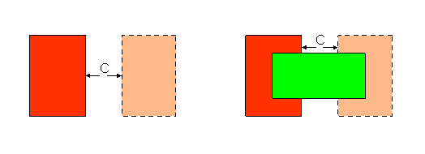

|
 |
 |
||||||
|
|
|
||||||
The built-in layer pair constraint definition, oacMinClearance, specifies the minimum separation between two different shapes on two different layers, in database units. Clearance constraints apply only to edges that have no intersections. Clearances are specified from the outside edge of the shape on the first layer to the outside edge of the shape on the second layer.
This constraint definition is symmetric, implying that the minimum clearance between layer1 and layer2 is the same as the minimum clearance between layer2 and layer1.
| Constraint type: | oaLayerPairConstraint (Symmetric: yes) |
| Value types: | oaIntValue, oaInt2DTblValue |
| Database types: | oaDesign, oaTech |
| Object types: | oaRect, oaPath, oaPolygon, oaPathSeg, oaRoute, oaPin, oaLayerBlockage, oaAreaBlockage, oaScalarNet, oaBusNetBit, oaAppObject |
The following value types are supported by this constraint:
This value represents the minimum clearance in database units.
Units: DBU
This value specifies the required clearance width as a function of two keys.
Units: DBU
The following parameters are supported by this constraint:
| Name | Value Type | Units | Default | Description | ||||||||
|---|---|---|---|---|---|---|---|---|---|---|---|---|
| widthLengthTableType oacWidthLengthTableTypeConstraintParamType |
oaIntValue | Enum | (Required) (only valid for value types: oaInt2DTblValue) |
This parameter determines how the value of the constraint is interepreted; whether the value is based on the widths of two shapes or is based on the width of the wider shape and the parallel run length of the other shape. The valid value for this parameter is an oaIntValue, which is represented by an oaWidthLengthTableType object. This parameter is represented by an oaWidthLengthTableType enumeration:
|
||||||||
| distanceMeasureType oacDistanceMeasureTypeConstraintParamType |
oaIntValue | Enum | euclidian |
This parameter determines whether the spacing values specified in the table values of the constraint are in either a Euclidian or Manhattan metric. The allowed value type for this parameter is an oaIntValue, and the allowed values are represented by an oaDistanceMeasureTypeEnum object. This parameter is represented by an oaDistanceMeasureType enumeration:
|
||||||||
| coincidentAllowed oacCoincidentAllowedParamType |
oaBooleanValue | Boolean | False |
When the coincidentAllowed parameter is specified and is true, then shapes can either meet the minimum extension or their edges can be coincident. If the parameter is false or is not specified, then the edges must meet the minimum extension specified and cannot be coincident. |

Shapes on layers such as poly and diffusion will create shorts if they touch. Setting a minimum clearance value keeps the two layers from touching and avoids unwanted gates or diodes.
Copyright 2002 - 2010 Cadence Design Systems, Inc.
All rights reserved.